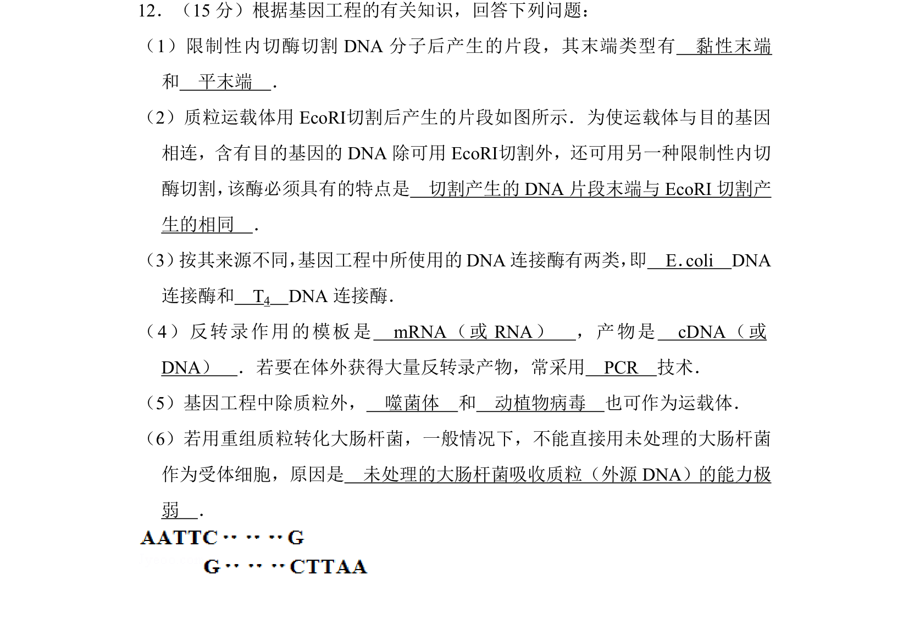
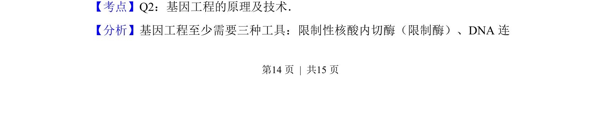
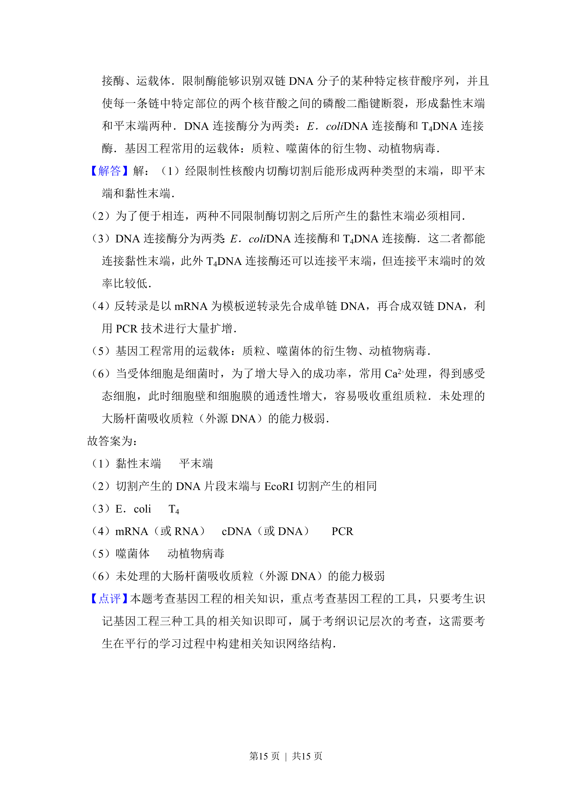

考点：限制酶 DNA连接酶 基因工程载体 反转录与PCR

本题考查基因工程工具、操作步骤及原理，包括限制酶、连接酶、载体和受体细胞等基础知识。


📄 原 PDF 第 14 页：
素材/真题/吉林/2008-2024·（吉林）生物高考真题/2012年高考生物试卷（新课标）（解析卷）.pdf
12．（15分）根据基因工程的有关知识，回答下列问题： （1）限制性内切酶切割DNA分子后产生的片段，其末端类型有 黏性末端 和 平末端 ． （2）质粒运载体用EcoRⅠ切割后产生的片段如图所示．为使运载体与目的基因 相连，含有目的基因的DNA除可用EcoRⅠ切割外，还可用另一种限制性内切 酶切割， 该酶必须具有的特点是 切割产生的DNA片段末端与EcoRI切割产 生的相同 ． （3） 按其来源不同， 基因工程中所使用的DNA连接酶有两类， 即 E．coli DNA 连接酶和 T4 DNA连接酶． （4）反转录作用的模板是 mRNA（或RNA） ，产物是 cDNA（或 DNA） ．若要在体外获得大量反转录产物，常采用 PCR 技术． （5）基因工程中除质粒外， 噬菌体 和 动植物病毒 也可作为运载体． （6）若用重组质粒转化大肠杆菌，一般情况下，不能直接用未处理的大肠杆菌 作为受体细胞，原因是 未处理的大肠杆菌吸收质粒（外源DNA）的能力极 弱 ．
【考点】Q2：基因工程的原理及技术．菁优网版权所有 【分析】基因工程至少需要三种工具：限制性核酸内切酶（限制酶）、DNA连